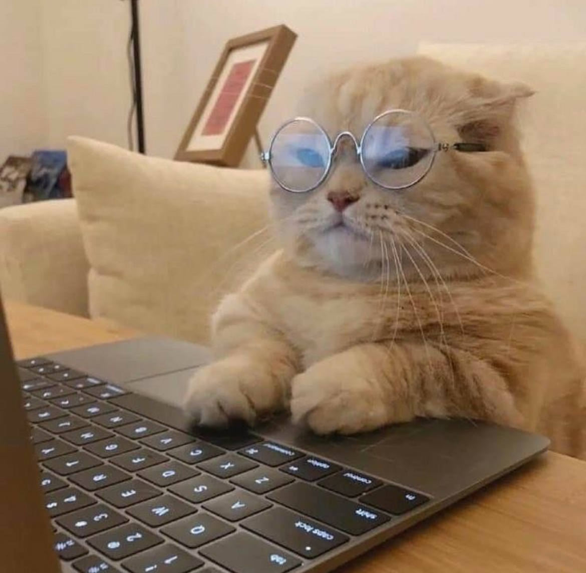
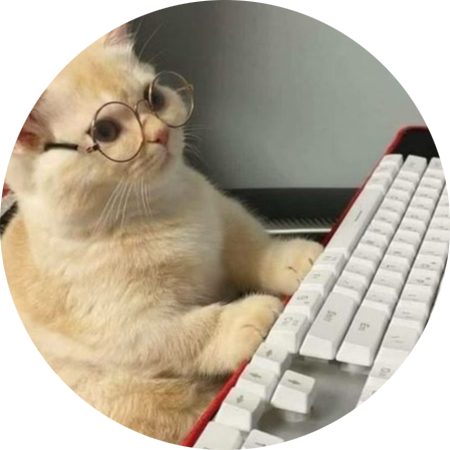
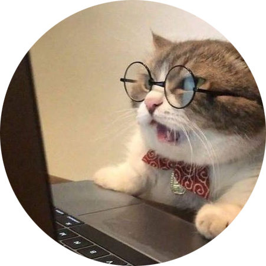
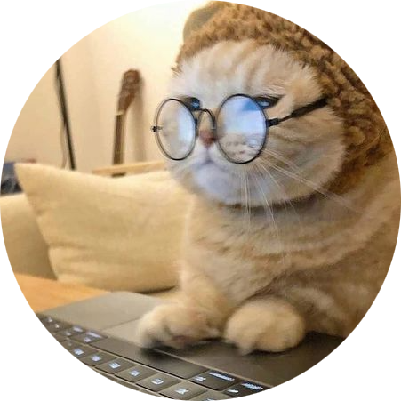

-
Clément
Accro aux jeux vidéo et geek d'informatique, je suis aussi un grand amoureux des animaux, surtout de mon chat, véritable star à la maison. En bonus, je passe du temps comme bénévole à la SPA, parce que les animaux, c'est la vie !
 -
David
Jeune parisien de 35 ans, je suis fan de manga et surtout de nourriture! J'adore faire de nouvelles expériences culinaires, gouter de la nourriture de différents pays et régions alors écrivez nous pour partager vos restaurants ! Je me ferai un plaisir d'y aller pour les tester.
 -
Christian
Mon idéal pour être heureux ? Boire un cappuccino en terrasse. Idéalement à l'autre bout du monde et avec quelqu'un. Me balader dans une ville que je ne connais pas et prendre en photo des choses insolites, étranges, des petites rues, des balcons, des graphitis, des vitrines étranges. Entrer dans un disquaire obscur et sortir avec un album de City Pop japonaise inconnu de 99,99% de la population. Rester des heures derrière mon pc à faire des trucs. Peu importe l'ordre de tout ça.
C'est ça mon idéal. -
Dijan
Addict au café, aux films, aux mangas, à la musique et aux longues promenades dans Paris. Mon objectif dans la vie? Finir mon challenge "1001 movies you must see before you die". Dans une autre vie je suis: barista et éleveuse d'ânes. J'aime (un peu trop) les chats. Je collectionne les mugs et les carnets, même si ça ne sert à rien. Je change de coupe de cheveux tous les six mois. Mes plats préférés? Les sarmas (turc), les takoyakis (japonais), le bibimbap (coréen), les pizzas et les bò búns (vietnamiens).
Et vive le poulet frit!!!